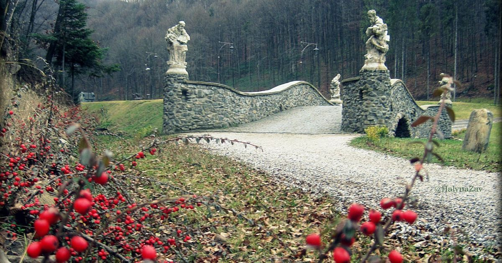

Сьогодні я підібрала для вас цікаві місця, які обов'язково потрібно відвідати.
Деякі фотографії робила я з батьками коли їздила в подорожі, а деякі взяті з джерел таких як Google та Pinterest.
Гарних вражень!!!
Ши́піт, Ши́пот, Воєво́дин — водоспад в Українських Карпатах, в межах Перечинського району Закарпатської області, за 12 км на північ від села Тур'я Поляна. Гідрологічна пам'ятка природи місцевого значення.
Водоспад утворився на місці виходу стійких до розмиву пісковиків палеогенового періоду у річищі потоку Воєводин, притоки Шипоту (притока Тур'ї, басейн Тиси), на південно-західних схилах Полонини-Руни.
Вода каскаду спадає з висоти до 24 м двома окремими потоками. Висота головного каскаду 5—6 м. Припускають, що цей водоспад утворився внаслідок землетрусу, під час якого в гірській породі поперек вузької глибокої долини виникла тріщина.
Парк Шенборна розташований в околицях курорту Воєводино, що робить його особливо популярним серед гостей не лише курорту але й Закарпаття.
Зба́разький за́мок — фортифікаційна оборонна споруда в місті Збараж Тернопільської області.
Розташований трохи осторонь від центру міста, у парку, на так званій Замковій горі.
Замок споруджено у 1626–1631 роках за проєктом італійського архітектора Вінченцо Скамоцці під керівництвом військового інженера Андреа дель Аква,
ймовірно, Г. ван Пеена коштом Христофора Збаразького.
Від 1994 року 3баразький замок входить до комплексу споруд 3баразького державного історико-архітектурного заповідника.
Парк заснований у 1796 році польським магнатом Станіславом Щенсним Потоцьким на честь дружини красуні-грекині Софії, і подарований їй до дня іменин в травні 1802 року. Ідея спорудження парку в романтичному стилі з використанням римської та грецької міфології належала самій Софії.
Місце, на якому було створено парк «Софіївка», аж до 1796 року являло собою пагорби майже без рослин, де протікав струмок, що починався поблизу села
Війтівка (тепер Родниківка). Береги струмка, затиснуті гранітними брилами, мали за прикрасу лише декілька дерев. В долині, де тепер ми бачимо
розбиту колону, росли дві старі груші й десяток верб. Навколишні пагорби, вкриті скелями були місцем, де шукали собі поживи всі тварини. Долина,
яка починалася від Красної Греблі, простягалася аж до нижньої частини Умані. Це чудове місце з прохолодними, прозорими й цілющими джерелами колись називалась Кам'янкою,
і було настільки привабливим, що учні василіанського колегіуму обрали його для своїх розваг та ігор.
Ту́стань — середньовічна наскельна фортеця-град і митниця XII—XVI століть,
давньоруський наскельний оборонний комплекс, залишки якого збереглися в Українських Карпатах (Верхньодністровських Бескидах),
у підніжжя котловини південних схилів Воронового хребта, у Стрийському районі
Львівської області, поблизу села Урич,
що на південь від міста Борислава та південний схід від селища
Східниця. Унікальна пам'ятка історії, археології, архітектури та природи
розміщена серед лісового масиву Підгородцівського лісництва
та входить до складу Державного історико-культурного заповідника «Тустань»
Недалеко від фортеці розташовані водоспади Кам'янка та Гуркало.